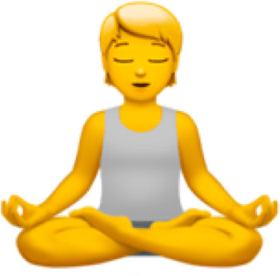
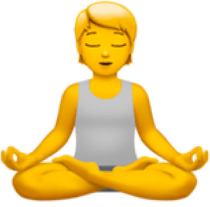

Meditation can give you a sense of calm,
peace and balance that can benefit both
your emotional well-being and your
overall health! 🧡
💛
Creating art boosts self-esteem and provides
a sense of accomplishment. You may feel
a boost of dopamine which can increase drive,
improve concentration, and just make you
feel good! 💚
💙
Cooking is an act of patience, mindfulness,
an outlet for creative expression, a means of
communication, and helps to raise one's
self esteem! 💜
Reading book can even relax your body by
lowering your heart rate and easing the tension
in your muscles!
🤎
Facetime your family or friends! It feels fulfilling.
A study showed that older adults had a much lower level
of depression if they regularly used video chat software
to communicate with their family and friends.
🧡
Exercising helps ease depression and anxiety
by releasing feel-good endorphins and other
natural brain chemicals that can enhance
your sense of well-being!
💛